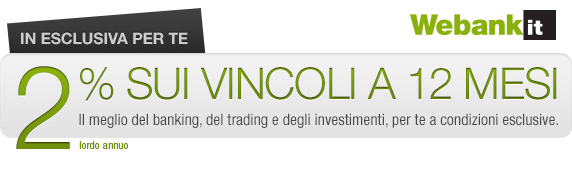
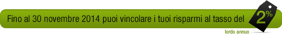
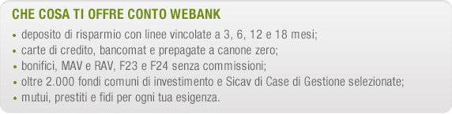

|  | ||
| Gentile NOME COGNOME, vogliamo ringraziarti per avere scelto Conto Webank. Per invitarti a scoprire la completezza della nostra offerta, ti riserviamo un’opportunità esclusiva: 2% sulle linee vincolate a 12 mesi anziché l’1,50%. |
||
|  | ||
| Cosa aspetti? Accedi all’area privata del sito e segui il percorso Investimenti > Gestione Deposito > Linee vincolate > Apertura nuova linea oppure digita Linea vincolata nella finestra di dialogo di Paolo. Potrai attivare subito una linea vincolata a 12 mesi al tasso del 2% lordo annuo. |
||
|  | ||
| Un saluto cordiale. Il team di Webank |
||
|